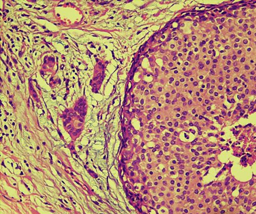

Información divulgativa. No sustituye la valoración de tu equipo médico ni sirve para decidir un tratamiento.


En resumen
| Qué es | Células malignas dentro de los conductos de la mama, sin invasión |
| Frecuencia | Alrededor del 20 % de los cánceres detectados en el cribado |
| Cómo se descubre | Casi siempre por microcalcificaciones en la mamografía, sin síntomas |
| Tratamiento | Cirugía conservadora con o sin radioterapia, o mastectomía; a veces hormonoterapia |
| Pronóstico | Mortalidad por cáncer de mama muy baja, en torno al 3 % a 20 años |
Qué es
En el carcinoma ductal in situ (CDIS) las células que recubren los conductos de la mama tienen el aspecto de células de cáncer, pero no han atravesado la membrana basal que rodea el conducto. Por eso no pueden llegar a los ganglios ni dar metástasis. Se considera el estadio 0 del cáncer de mama.
No todos los CDIS evolucionan: se calcula que una parte, difícil de predecir, se convertiría con los años en un cáncer infiltrante si no se tratara. El riesgo es mayor en los de alto grado, los extensos y los que tienen necrosis en el centro de los conductos (comedonecrosis).
El carcinoma lobulillar in situ es diferente: hoy se considera sobre todo un marcador de mayor riesgo de cáncer en ambas mamas, y no suele tratarse con cirugía amplia salvo en variantes concretas.
Cuántos casos hay
Antes del cribado con mamografía el CDIS era raro. Hoy supone alrededor de uno de cada cinco cánceres de mama diagnosticados en los programas de cribado. Su aumento es uno de los ejemplos más citados de sobrediagnóstico, porque algunas de estas lesiones nunca habrían causado problemas.
Síntomas y diagnóstico
Casi nunca da síntomas. Raramente se nota un bulto o una secreción por el pezón, o una lesión eccematosa del pezón (enfermedad de Paget).
El diagnóstico se hace así:
- Mamografía: suele mostrar microcalcificaciones agrupadas, finas o ramificadas.
- Biopsia asistida por vacío guiada por mamografía (estereotáxica), que extrae varias muestras.
- Estudio de los receptores hormonales, que suelen ser positivos.
- A veces resonancia para valorar la extensión.
Si en la biopsia hay CDIS, la cirugía puede descubrir zonas de cáncer infiltrante, por eso a veces se cambia el diagnóstico tras la operación.
Tratamiento
El objetivo es evitar que aparezca un cáncer infiltrante en la misma mama.
- Cirugía conservadora (tumorectomía) con márgenes libres, a menudo tras marcar la lesión con un arpón o una semilla. Se recomienda un margen de al menos 2 mm.
- Radioterapia después de la cirugía conservadora: reduce a la mitad las recaídas en la mama, aunque no cambia la supervivencia. En lesiones pequeñas, de bajo grado y con márgenes amplios, en mujeres mayores, se puede valorar omitirla.
- Mastectomía si el CDIS es muy extenso o hay varias zonas, con posibilidad de reconstrucción inmediata.
- Biopsia del ganglio centinela solo si se hace mastectomía o hay sospecha de invasión, porque después no se podría hacer.
- Hormonoterapia (tamoxifeno o inhibidores de la aromatasa durante cinco años) en los CDIS con receptores positivos tratados con cirugía conservadora: reduce el riesgo de nuevas lesiones en ambas mamas. Su beneficio se valora frente a sus efectos secundarios.
Vigilancia activa
Varios ensayos (LORIS en Reino Unido, LORD en Europa y COMET en Estados Unidos) estudian si el CDIS de bajo riesgo puede vigilarse con mamografías en lugar de operarse. Los resultados iniciales de COMET, publicados en 2024, no mostraron más cánceres infiltrantes a dos años con la vigilancia, pero todavía no es una práctica habitual fuera de los ensayos.
Pronóstico
Tras el tratamiento, la recaída en la mama está en torno al 10-15 % a diez años con cirugía conservadora sola y menos con radioterapia. La mitad de las recaídas son de nuevo CDIS y la otra mitad, cáncer infiltrante. El riesgo de morir por cáncer de mama es muy bajo, alrededor del 3 % a los 20 años, algo mayor en mujeres jóvenes y de raza negra según los grandes registros.
Después del tratamiento
Mamografía anual de las dos mamas, revisión clínica y atención a los efectos de la hormonoterapia si se toma. Llevar una vida activa, evitar el alcohol y mantener un peso saludable reduce el riesgo de nuevos cánceres.
Preguntas para tu equipo
- ¿Mi CDIS es de bajo, intermedio o alto grado?
- ¿Necesito radioterapia o puedo evitarla?
- ¿Me beneficia la hormonoterapia?
- ¿Hay algún ensayo de vigilancia activa al que pueda acceder?
Ver también: Cáncer de mama, Cribados en España, Carcinoma lobulillar de mama.
Historia · Medicapedia
Carcinoma ductal in situ en la historia de la medicina
Cómo se descubrió, quién lo investigó y cómo cambió su tratamiento a lo largo de los siglos, contado en Medicapedia, nuestra web hermana de historia de la medicina.
Leer la historia en Medicapedia ↗Fuentes
- Narod SA, et al. Breast cancer mortality after a diagnosis of ductal carcinoma in situ. JAMA Oncol. 2015;1:888-896. doi:10.1001/jamaoncol.2015.2510
- Hwang ES, et al. Active monitoring with or without endocrine therapy for low-risk ductal carcinoma in situ: the COMET randomized clinical trial. JAMA. 2025.
- Loibl S, et al. Early breast cancer: ESMO Clinical Practice Guideline. Ann Oncol. 2024;35:159-182. doi:10.1016/j.annonc.2023.11.016
- NCI. Carcinoma ductal in situ (PDQ). cancer.gov/espanol/tipos/seno
Guías y documentos recientes (2024-2026)
- SEOM y REDECAN. Las cifras del cáncer en España 2026. Madrid: SEOM; 2026. seom.org
Fuentes revisadas y actualizadas en noviembre de 2026.